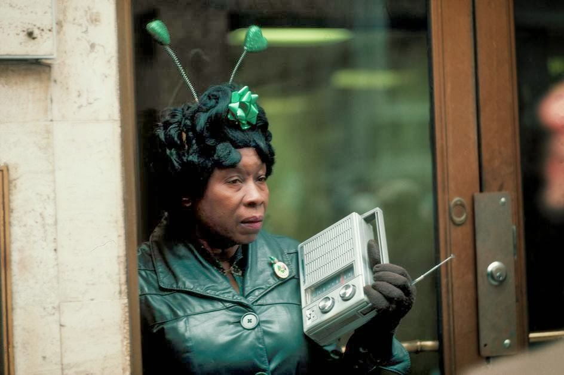
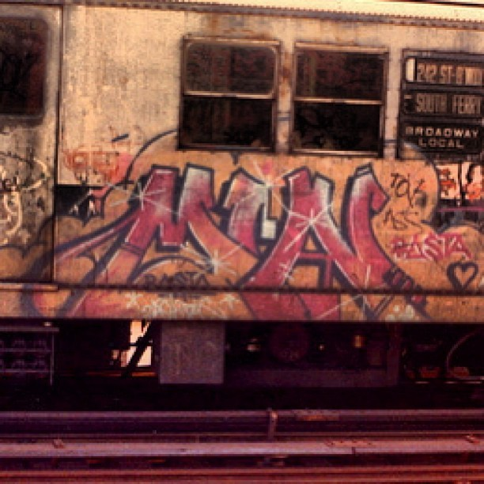
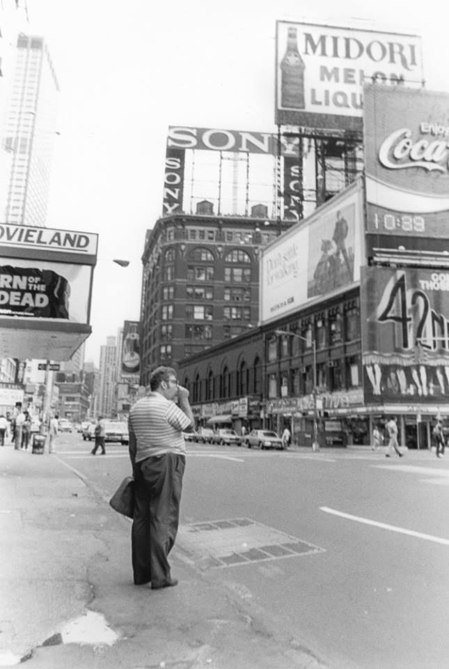
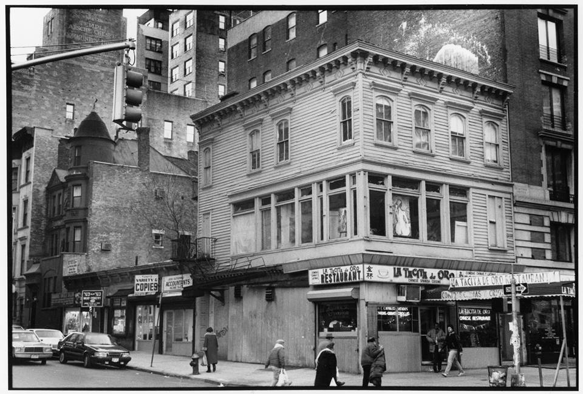

Brighton Beach 1980
Brighton Beach 1980

E. 149th St, in the Bronx, 1986
Ballerinas over New York
1925

Sax on the subway, 1980

Photo by Matt Weber, 1990

The Regency Theater on Broadway and 67th, 1984

St. Patrick’s Day, 1983.

Min / Rasta on the 1 train

1980s – NYC Subway Station

Good head, Washington Square Park, 1984

True love is just a bench away…
Central Park, 1983

Woman waiting in vain for a cab in Times Square during taxi strike, 1949.
by Yale Joel

Space shuttle Enterprise being ferried over NYC, 1983

Todd Webb Fat Men’s Shop, The Bowery, New York City 1946
The RKO Palace Theatre, NYC, 1955
In 1982 this crazy person planted 1.5 acres of wheat in a downtown landfill. Let’s hear it for crazy people!
(And to people who are – five minutes after me posting this – complaining that this isn’t really crazy, yes, I know. Growing food isn’t crazy. But you have to be a little nuts to plant wheat in a NYC landfill. I am trying to point this out, and celebrate that particular brand of forward thinking nuttiness. I didn’t think I’d have to write a paragraph explaining this.)

Dictators by Godlis, Bowery, 1976.

1983. That white car is gonna get bombed hard.
Street life.

by Ferdinando Scianna
New York City, 1985.

Crosby Street, 1978

A restaurant owner puts up a sign during the New York blackout of July 13, 1977 -

Snowy Central Park, 1974
Bill Murray hanging out in NYC - 1970s
East Village, 1989 © Matt Weber

Crime in progress…

View from the Empire State Building, 1975
Blondie goes NYPD

Ricky Flores

Jogging wasn’t as cool in 1975
Rivington and Forsyth, 1986

Photo by Tom Kittel, 1986

97th between Amsterdam and Columbus, 1966
In the shadow of the WTC, 1975
Throwback Thursday: Construction workers lay the foundation for Philharmonic (now Avery Fisher) Hall in 1960. (Courtesy Lincoln Center Archives)

Then and now.

100th and Broadway, 1989
Lex Ave, 1979. Ah, the sweet smell of garbage in the morning air!

The Bronx, 1970s

Joel Meyerowitz, Empire State Series, Young Dancer, 34th Street and 9th Avenue, New York City, 1978


3rd Ave and 66th Street, 1979
The Skirt’s The Thing, Dovima and Jean Patchett in Madison Square for a 1958 photo spread in Vanity Fair, photo by William Helburn
1980s. I remember Yes. Big dude, drove a limo, always had good weed.
NYC, 1981
(via Feature Shoot)

‘sup

42nd Street, New York City. 1950s.
Photographer: Getty Images

1980s
Houston and 2nd Ave, 1980

{kind=link}